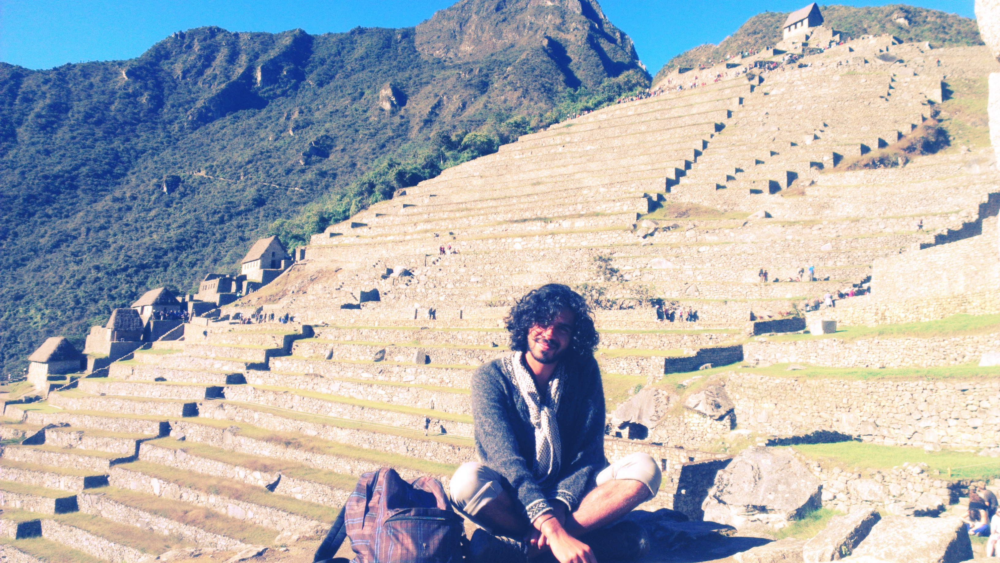
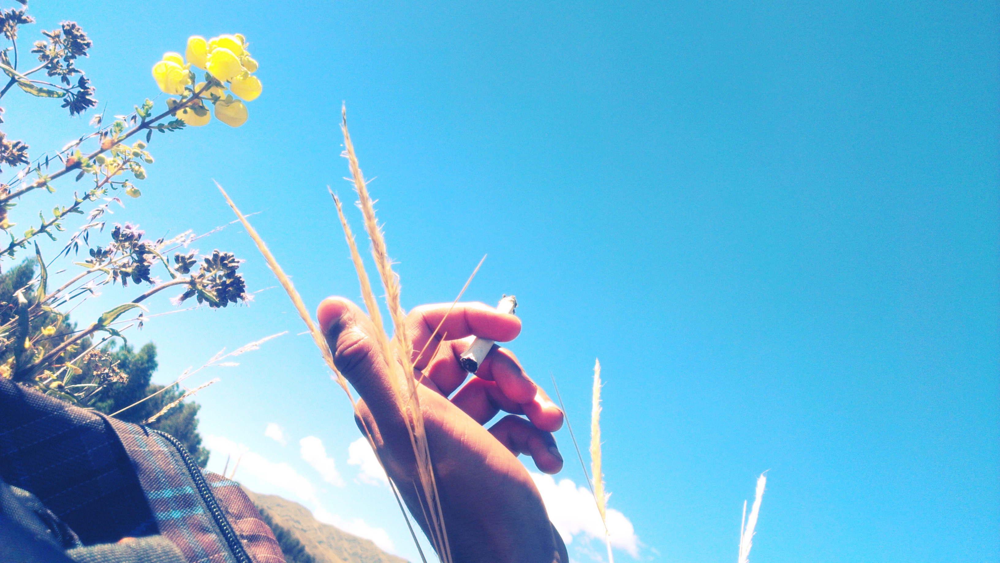
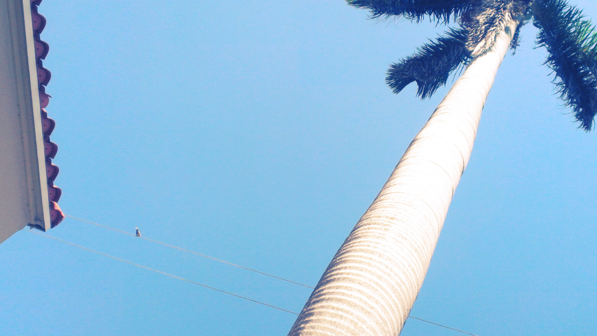

Hi, i am raza jafri. I am a boy on a journey. I am an explorer and an adventurer. I travel through places and people; I travel through space and time. I am a shameless idealist and an intellectual deviant.

A thought to tickle your mind:
Out beyond ideas of wrongdoing and rightdoing there is a field. I’ll meet you there. When the soul lies down in that grass the world is too full to talk about. Rumi
A thousand words
Some of my latest travels include Boston and Miami.
Filosofia
“In order to build a career and to be successful, one has to be determined. One has to be ambitious. I much prefer to drink coffee, listen to music and to paint when I feel like it… Maybe I was irresponsible. But part of the pleasure of being alive is that I didn’t take everything as seriously as one should.” Saul Leiter
Contact Me
Call me: 1 (630) 386 0267
Email me: raza.jafri.sy@gmail.com
I also happen to be connected through certain social mediums.


© 2014 syed raza abbas jafri. no rights reserved.